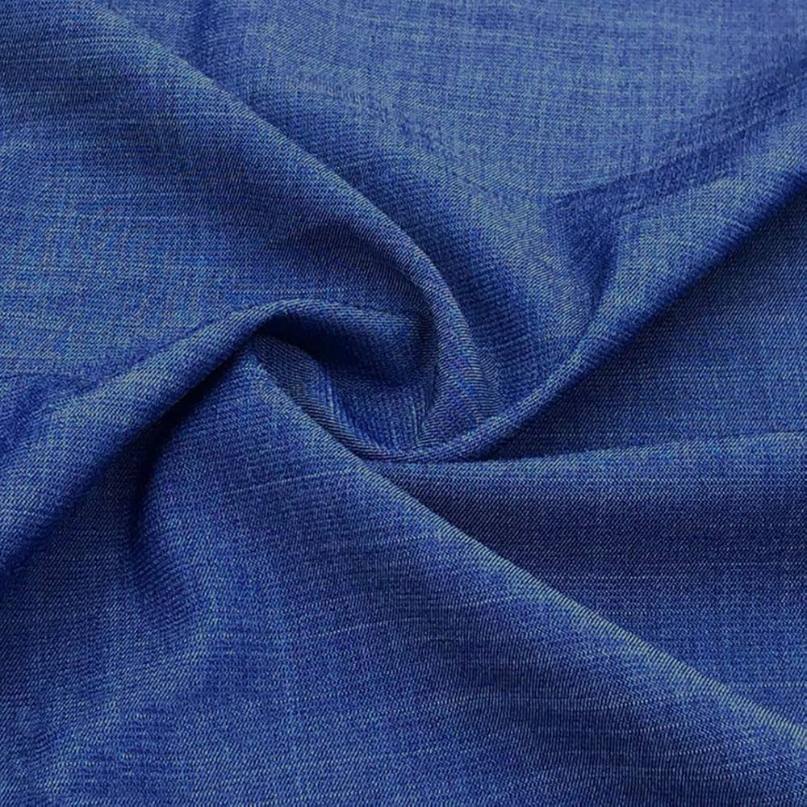

Lightweight Denim :
Description : Soft and breathable, ideal for a smart-casual formal shirt or slim-fit denim pants. It can also be used for a modern kurta with a relaxed look.
Available colours: White,Black,Blue,Grey,Cream,Brown.
Price: 75$ /per metre
Width: "54"
Buy now

Stretch Denim
Description :This denim has a bit of stretch for added comfort, making it a great option for a well-fitted formal shirt or sleek denim pants, and can also be used for a stylish kurta-pajama combination.
Available colours: White,Black,Blue,Grey,Cream,Brown,Beige.
Price: 130$/per metre
width: "58"
Buy now

Raw Denim
Description : A thicker, sturdy denim with a classic finish. Perfect for structured formal shirts or pants that have a strong, clean look, and it can be used in modern, minimalist kurta styles.
Available colours: White,Black,Blue,Grey,Cream,Dark blue,A light Orange-Pink shade.
Price: 100$ / per metre
Width: "56"
Buy now